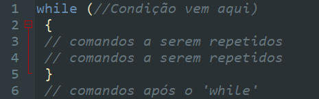
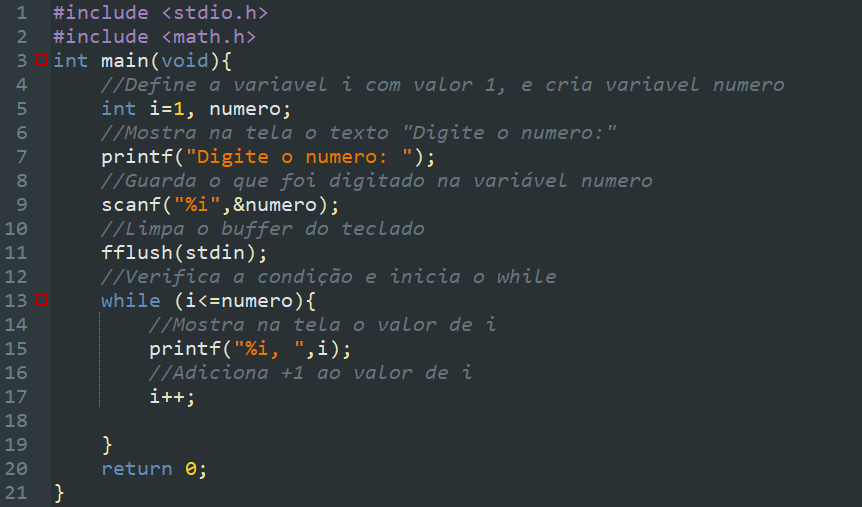
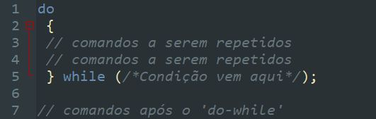
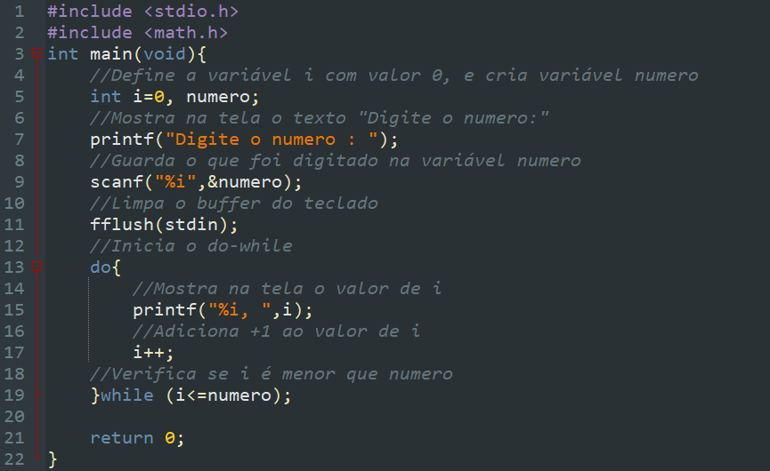

Laços de repetição
O que são laços de repetição?
Laços de repetições permitem que um conjunto de instruções seja repetido enquanto a condição dada for verdadeira. Ele é útil para executar tarefas repetitivas onde o número de iterações não é conhecido previamente e depende de uma condição dinâmica.
Tipos de laço de repetição
Laço de repetição while
O significado de while é "enquanto". O comando while permite que um certo trecho de programa seja executado ENQUANTO uma certa condição for verdadeira. A forma do comando while é a seguinte:
O funcionamento é o seguinte:
- Testa a condição;
- Se a condição for falsa então pula todos os comandos do bloco subordinado ao while e passa a executar os comandos após o bloco do while.
- Se condição for verdadeira então executa cada um dos comandos do bloco subordinado ao while.
- Após executar o último comando do bloco do while volta ao passo 1.
O comando while deve ser usado sempre que:
- Não soubermos exatamente quantas vezes o laço deve ser repetido;
- O teste deva ser feito antes de iniciar a execução de um bloco de comandos;
- Houver casos em que o laço não deva ser repetido nenhuma vez.
Veja um exemplo de while na prática:
Tenha atenção especial com o teste do comando while. As variáveis usadas no teste devem ter sido inicializadas antes do teste.
Assista ao vídeo sobre while
Laço de repetição do-while
O significado de do-while é fazer-enquanto. O comando do-while permite que um certo trecho de programa seja executado ENQUANTO uma certa condição for verdadeira. A forma do comando do-while é a seguinte:
O funcionamento é o seguinte:
- Executa os comando dentro do bloco do-while;
- Testa a condição;
- Se a condição for falsa então executa o comando que está logo após o bloco subordinado ao do-while .
- Se 9condição for verdadeira então volta ao passo 1.
O comando do-while deve ser usado sempre que:
- Que não soubermos exatamente quantas vezes o laço deve ser repetido;
- O teste deva ser feito depois da execução de um bloco de comandos;
- O bloco de comandos deve se executado pelo menos 1 vez.
Veja um exemplo de do-while na prática:
